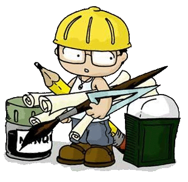

Strona oparta na CSS wykorzystująca (bardzo niewielką) część poten-cjału kaskadowych arkuszy stylów.
Witryna została przy-stosowana do najpo-pularniejszej rozdziel-czości ekranu roku 2017 (1366×768) i wykorzy-stuje liquid layout. Dzięki temu dostosowuje się do rozmiarów okna przeglądarki i roz-dzielczości. Wadą tego rozwiązania jest to, że strona przeskalowana do innego rozmiaru niż nominalny, może wyglądać niekorzystnie.
Żonaty i dzieciaty pracownik biurowy zatrudniony na 1,25 etatu w dwóch "zakładach budżetowych".
Około roku 2012 utworzyłem dwie strony internetowe dla swoich miejsc zatrudnienia (przedszkole288.waw.pl, ppp10.waw.pl). Obie bazują na przejrzystym szablonie i zostały w całości dostosowane przeze mnie. Ze względu na zmianę charakteru pracy, która polega coraz bardziej na zajmowaniu się działaniami administracyjno-statystycznymi, istniejącymi stronami zajmuję się tylko doraźnie i nie wprowadzam na nich głębszych zmian. Wcześniej i później tworzyłem także inne strony: jedną zarobkowo (dla małej firmy) i kilka dla swoich potrzeb (przed nastaniem ery Facebooka).
Po 12 latach pracy, ukończeniu studiów inżynierskich na SGGW i wielokrotnym nagrodzeniu jeszcze większą łopatą za wykopanie najgłębszego dołu, za namową kolegi-informatyka, a w poszukiwaniu lepszych perspektyw (zarobków) i wyzwań (chociaż... głównie zarobków), postanowiłem się przekwalifikować.
Do tej pory byłem samoukiem. Jeżeli potrzebowałem rozwiązania - szukałem go w sieci. Jeżeli było ono w moim zasięgu organizacyjnym i finansowym - realizowałem je. W codziennej pracy wykorzystuję znajomość:
Liczę na to, że pozytywnie ukończony kurs otworzy mi możliwość na ubieganie się o pracę, która mnie interesuje (szeroko pojęte tworzenie "rozwiązań webowych" front- i back-endowych), a jednocześnie zapewnia gratyfikację za wykopanie najgłębszego dołu. Zdaję sobie sprawę z tego, że kurs jest tylko początkiem nowej drogi, ale wiem też, że dzięki niemu poznam nowe rozwiązania, które pomogą mi w pracy - obecnej lub nowej.
{kind=link}